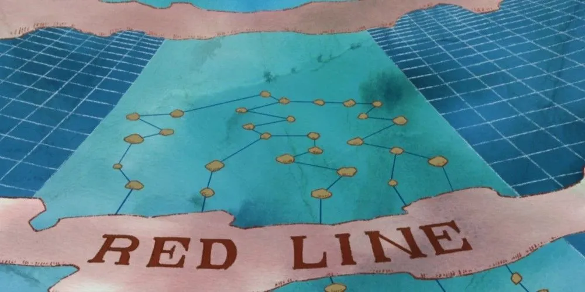
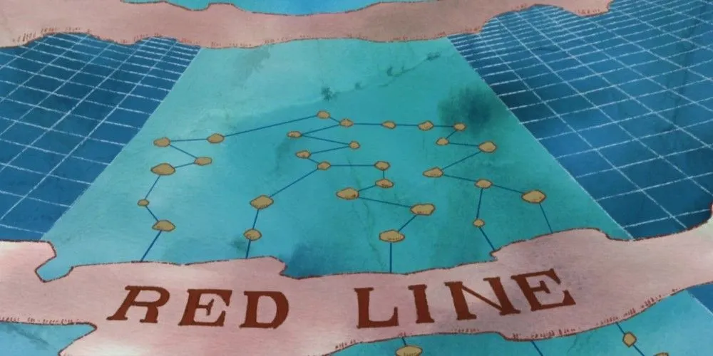

.gif)
Monkey D. Luffy
Monkey D. Luffy, também conhecido como "Luffy do Chapéu de Palha" e comumente como "Chapéu de Palha",[10] é o fundador e capitão dos cada vez mais infames e poderosos Piratas do Chapéu de Palha, bem como o mais poderoso de seus melhores lutadores.[26][27] Ele deseja encontrar o tesouro lendário deixado para trás pelo falecido Gol D. Roger e assim se tornar o Rei dos Piratas,[28] o que ajudaria a facilitar um sonho desconhecido dele que ele contou apenas para Shanks, seus irmãos e tripulação.[29][30] Ele acredita que ser o Rei dos Piratas significa ter a maior liberdade do mundo.[31]
Luffy possui habilidades especiais graças à fruta do diabo que comeu, chamada Gomu Gomu no Mi, que transformou seu corpo em borracha, permitindo-lhe esticar, expandir e torcer seu corpo de maneiras incríveis. Apesar de sua natureza aparentemente simples, Luffy é um líder nato e demonstra grande sabedoria e empatia, inspirando aqueles ao seu redor. Ao longo de sua jornada, Luffy reúne uma tripulação diversificada, os Piratas do Chapéu de Palha, cada membro com habilidades únicas e sonhos próprios. Juntos, eles enfrentam inimigos poderosos, exploram novas ilhas e desvendam mistérios enquanto se aproximam cada vez mais do One Piece. A jornada de Luffy é marcada por desafios constantes, mas também por laços de amizade inquebráveis e o desejo de alcançar a liberdade suprema.
 
